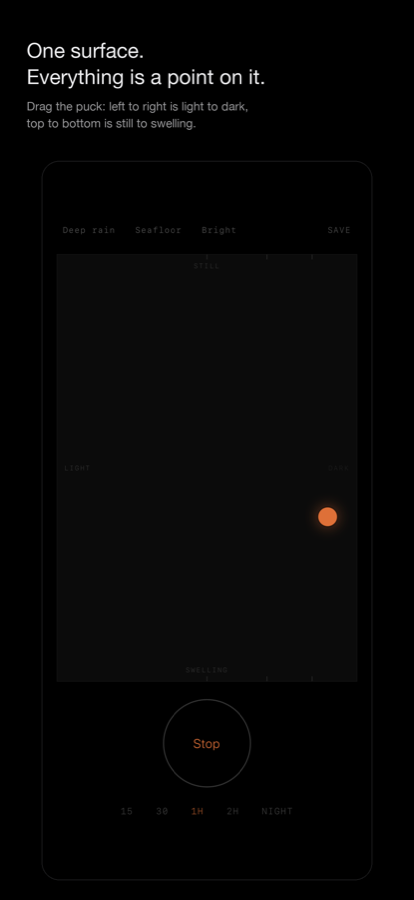
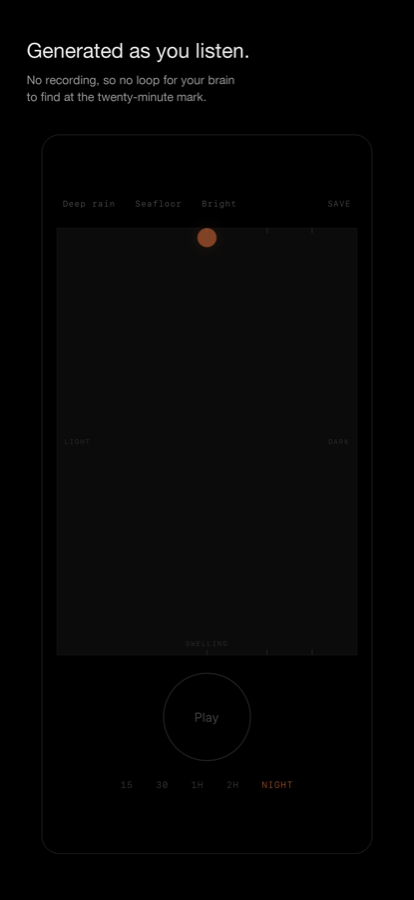
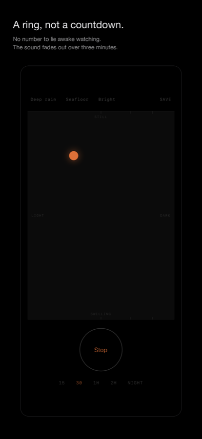

Your brain is very good at finding the loop.
It works for a while. Then the seam arrives, and once you have heard it you listen for it. The thing that was supposed to hide the world becomes the thing you are paying attention to.
Sound Terrain has no file to loop. The sound is synthesised sample by sample, all night, and no two seconds of it are ever the same.
One surface. Everything is a point on it.
No sliders, no mixer, no twelve band equaliser to fight with in the dark. Find a sound, name it, and from that night on it is one tap.



Built for the dark
True black
An OLED screen emits nothing it does not have to. Controls recede rather than announce themselves.
It leaves slowly
The sound fades out over three minutes. Silence that simply arrives will wake you.
Nothing is collected
No account, no advertising, no analytics. The app makes no network requests at all, because there is no server to send anything to.
Where you expect it
Works with the lock screen, Control Centre, AirPods and VoiceOver.
Free to fall asleep to. One purchase to sleep to.
The surface, every colour, the swell and unlimited saved sounds are free, with no time limit. The only thing that costs anything is the whole night.
Download on the App Store